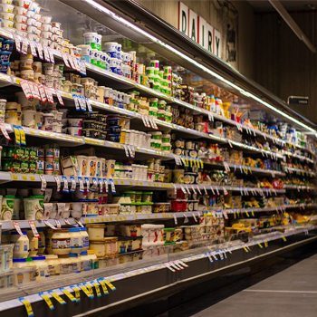
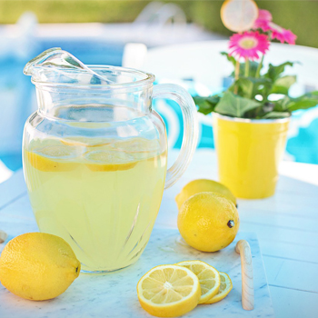
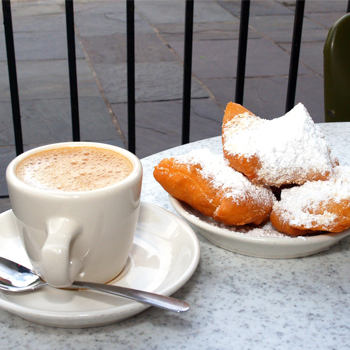

CU 소개
ABOUT US
매일매일 신선함으로 가득 차는 CU는 재치 있는 상품으로 하루를 충전하고, 365일 24시간 언제 어디서나 편리하게 원하는 것을 넘어 필요한 것까지 찾아주는 서비스로 편의점 이상의 가치를 드립니다.
-
- Nice to CU
-
언제 어디서나 만나면 반가운 브랜드.
신선함으로 일상을 충전하고 활력을 얻는 공간 · 일상의 플랫폼.
CU가 고객의 하루를 함께합니다.
-
- CU의 한 달 평균 이용 고객 수
- 12,000만명. 모든 국민이 한 달에 한 번 이상 방문하는 숫자, 고객의 가장 가까운 곳에서 고객의 하루 하루를 더욱 가치있게 만듭니다.
Brand Story
고객과 사회에 좋은 친구.
BGF리테일의 편의점 브랜드 CU입니다.
- Nice to CU
-
Nice to see you! 친근한 인사차럼
고객에게 언제 어디서나 반가운 브랜드로 다가갑니다. -
상품과 서비스 제공을 넘어
당신에게 휴식과 위로, 응원과 힘이 되는
즐거운 경험과 공간을 만들어갑니다.

CU Vision
고객의 일상을 리프레쉬 일상의 라이프 플랫폼 제공.
CU는 고객을 리프레쉬 할 수 있는 상품과 서비스를 제공하여 하루의 시작도, 잠깐의 휴식도, 하루의 마무리도 함께하는 편한 친구 같은 일상의 플랫폼으로 성장할 것입니다.
-
- 브랜드 본질
ESSENS - Daily Refresh
- 브랜드 본질
-
- 브랜드 비전
Vision - Daily Life Platform
- 브랜드 비전
-
- 대고객 메세지
Slogan - Fresh and Refresh
- 대고객 메세지
Life Platform
고객의 하루가 시작되고, 잠깐의 휴식이 되어 머무르고, 하루의 마무리를 같이 하는 CU
이전까지의 편의점은 단순히 제품과 서비스를 채워두고 제공하는 편의점으로 고객들이 필요로 하는 상품과 서비스, 편안한 휴식 제공에 대해 부족함이 있었습니다. CU는 정형화된 틀을 깨는 Fresh한 생각으로 매장을 방문한 고객들이 1분 1초도 Refresh 할 수 있도록 편안한 휴식처가 되기 위해 노력하고 있습니다.
-

space
동선 하나까지 세심하게 배려하여
매대를 낮추고 복도를 넓힌
Fresh한 쇼핑공간 -

refresh
매장의 인테리어를 환하고
깨끗하게 개선해 시각적인
Refresh의 시간 -

convenience
카페, 미팅룸, 공연장과 같이
생활에 필요한 부분을 늘 연구하는
사람 중심의 편의점
앞으로 CU는 상품과 서비스만 제공하는 어제의 편의점을 넘어 혼자서도 가장 편안한 시간을 보내고, 행복하게 함께 식사를 하고, 누구와도 부담없이 만나는 ‘라이프 플랫폼’, 내일의 편의점으로 여러분의 마음속에 자리잡기 위해 당신을 대하는 자세를 더 Fresh하게 만들어 CU를 찾는 모든 분들이 언제나 Refresh한 순간을 느낄 수 있도록 최선을 다하겠습니다.
하루를 시작해서 하루를 마무리 할 수 있는 당신만의 휴식처가 되기 위해 CU가 다시 한번 달라집니다.